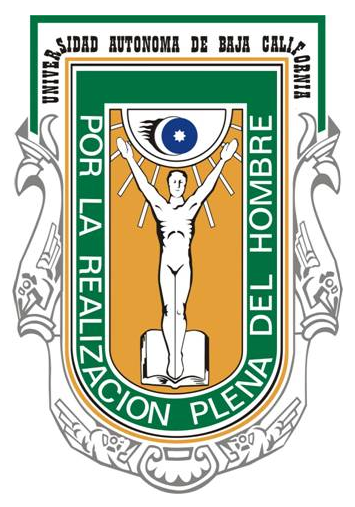
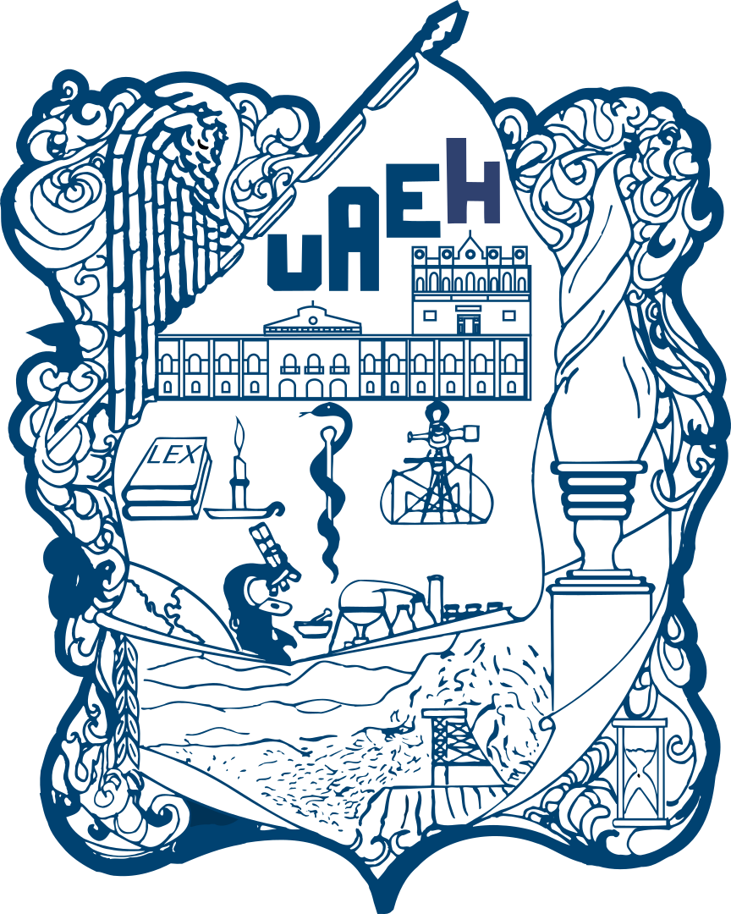
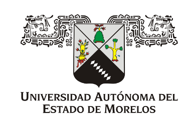
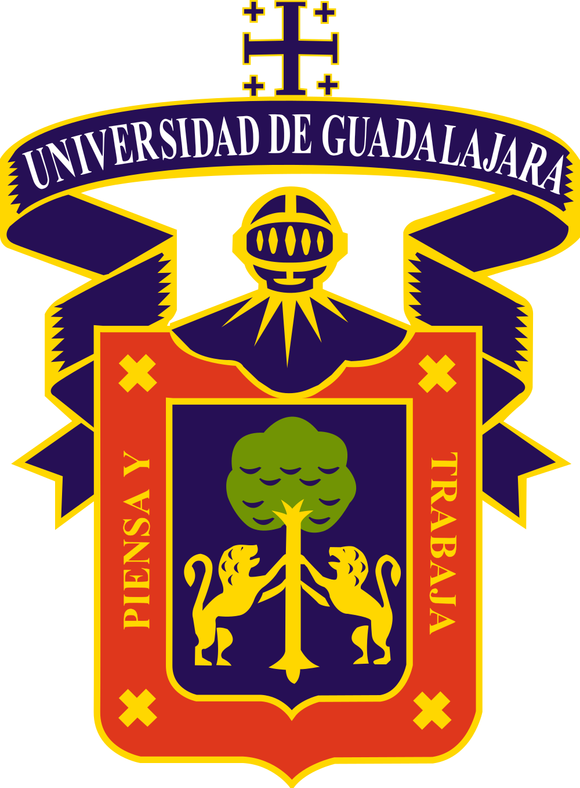
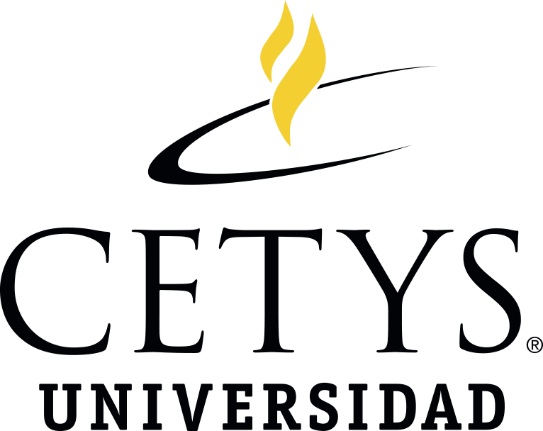
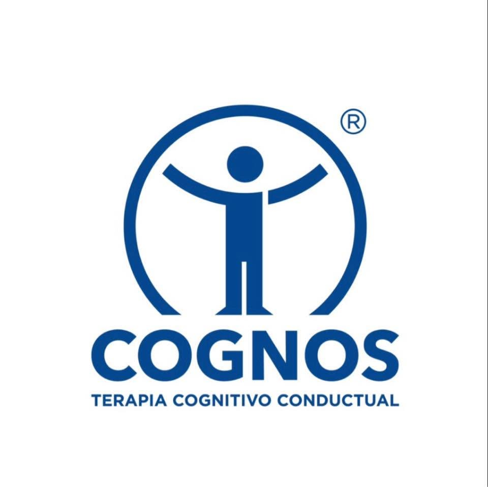

Universidad Nacional Autónoma de México
Explore members’ affiliations and open their profiles from the graph.
Swipe to explore the graph. The full directory follows.
Universidad Nacional Autónoma de México

Universidad Autónoma de Baja California

Universidad Autónoma del Estado de Hidalgo

Universidad Autónoma del Estado de Morelos

Universidad de Guadalajara

CETYS Universidad

Tecnológico de Monterrey
Simon Fraser University

COGNOS · Cognitive Behavioral Therapy